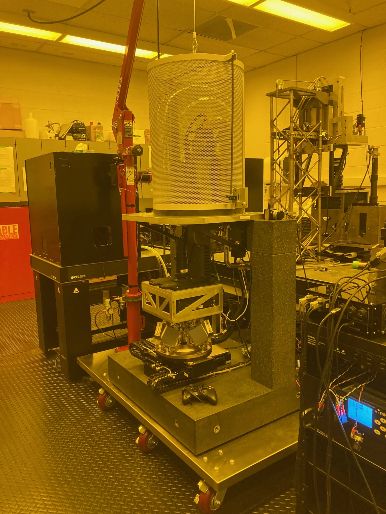
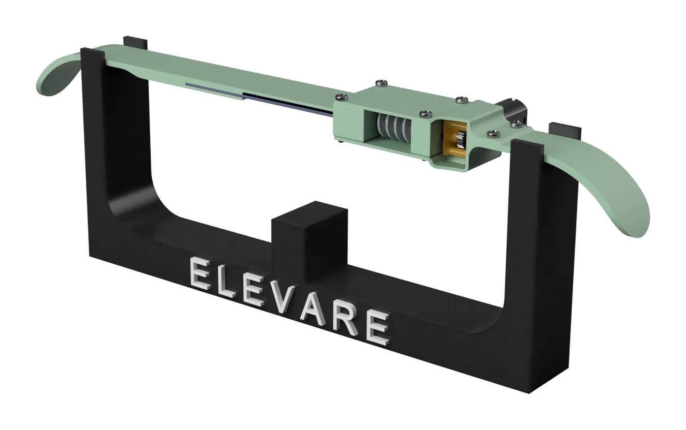
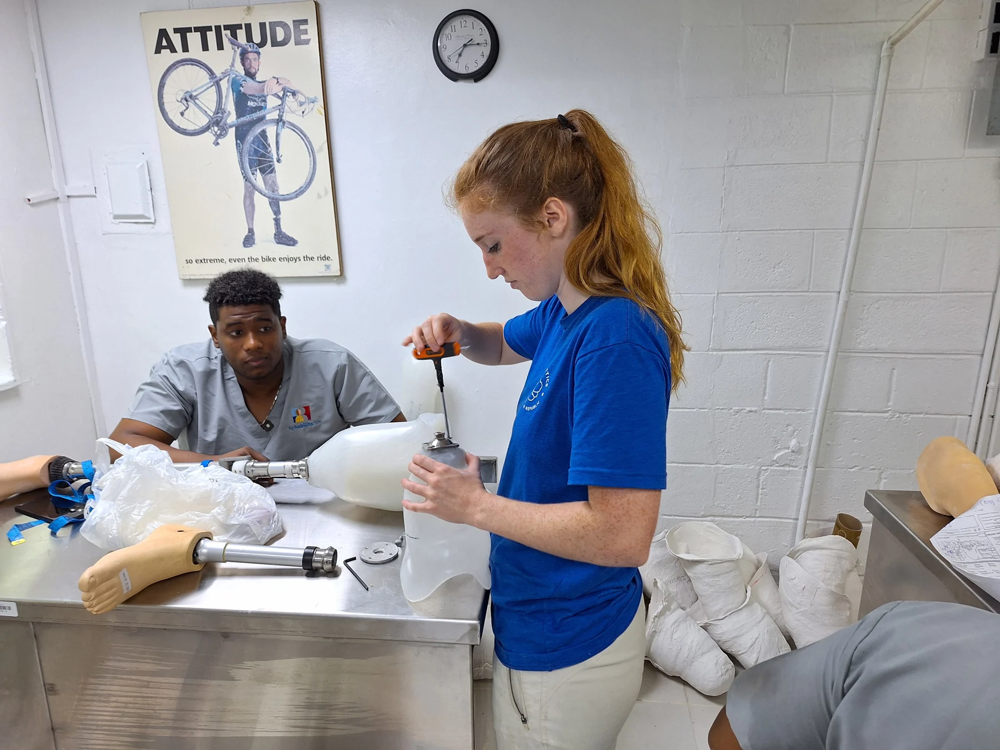

Heidi Hunter
Mechanical & biomedical engineering
I’m a biomedical engineer passionate about designing and developing innovative, patient-centered solutions. Explore my work and experiences below! .
M.S. Biomedical Engineering, University of Utah · Expected Dec. 2026
B.S. Mechanical Engineering · BYU, June 2025
Experience

Professional Experience
Xenter, Tensai Surgical Solutions, Edwards Lifesciences, Nusano, and New Century Industries.

Research
Microfluidic devices, vacuum-capable 3D printing, and wearable spine sensors at Brigham Young University.

Engineering Design Projects
My master’s implant project, Solvay capstone, and international product-development work in Singapore.

Prosthetics & Leadership
Clinical prosthetics work in the Dominican Republic, student design competitions, teaching, and mentoring.